人心比万物都诡诈，坏到极处，谁能识透呢？
——《圣经》
袁立是真实的，她的照片没有ps和矫揉造作的妩媚，因为她不关注美肤、长腿和逼格，这也注定她不会成为娱乐圈的朋友，因为不在一个level。
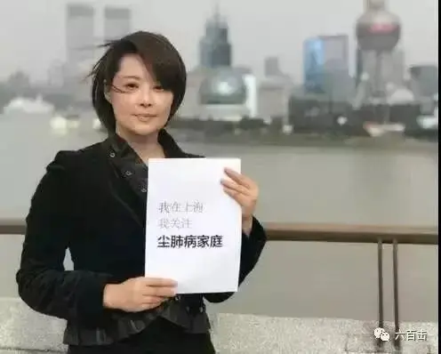
袁立是有爱的，她可以谦卑地蹲下来给D端人洗脚。
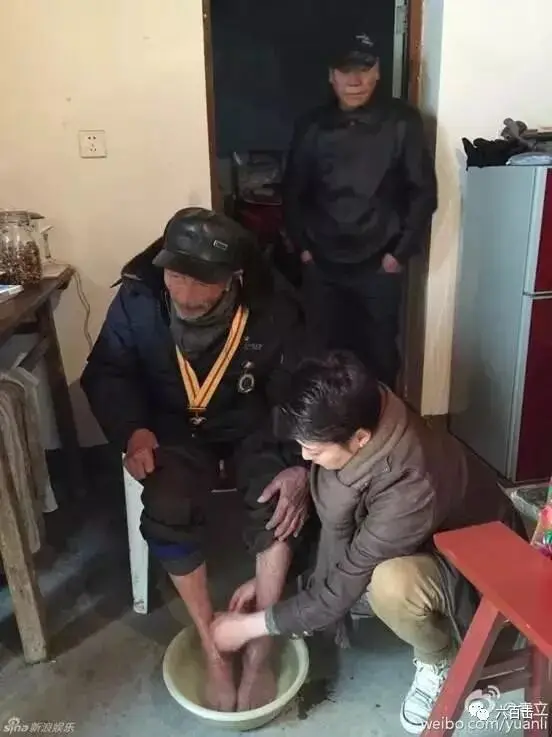
不是套个鞋套，拿着没有粘过泥土的铁锹，摆个姿势去作个恶心虚伪的秀。
眼睛是心灵的窗口，袁立的眼里是600万挣扎于痛苦和死亡边缘的中国尘肺病患者，娱乐圈的眼里却只有爆料、漏点、档次、高级盛宴和俊男靓女。
更荒唐的是，如今袁立在浙江卫视《演员的诞生》节目组和某些人的眼中成为了神经病。
我只能说，袁立没错：
只是神经病眼中的世界才是神经病，只有神经病手中剪辑出来的东西才是神经病，但只有神经病永远都不知道自己是个神经病。
不管有多么有力的证据，不管群众多么声势浩大的声讨，神经病永远都不会认错。
没错，我想让大家知道，上到公权下到具体的个人，这是一个无人认错的世界。
抛开浙江卫视之前不签合同、各种忽悠不说，当袁立意识到自己被耍后，我们来看看浙江卫视的认错方式。
首先是神乎其技的禁言，我也是第一次知道，这项神功可以把发送键都取消。
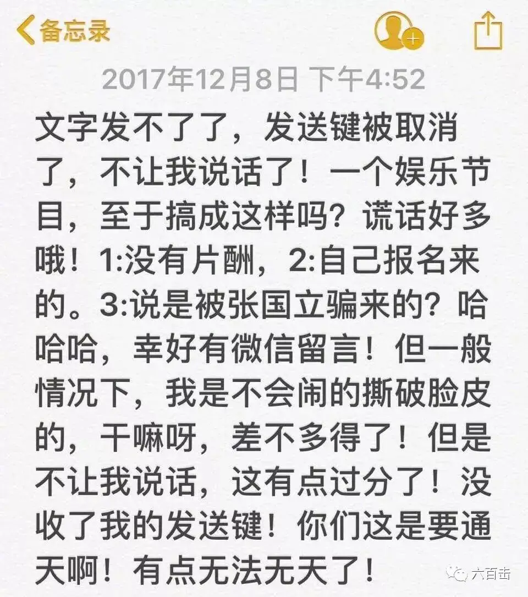
我也不知道节目组竟然可以厉害到可以随意删掉自己不想看到的视频。
真是厉害了，你们不知道这样做违法了么！！！！
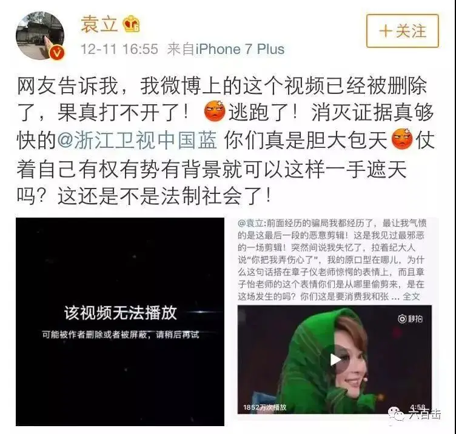
我在想，有钱有势就可以颠倒黑白，他们是如何办到的。
果然有知乎网友有和我一样的疑问，还耿直的在知乎上问了，但是没有答案，这背后的水太深，我们今天只关注认错！！
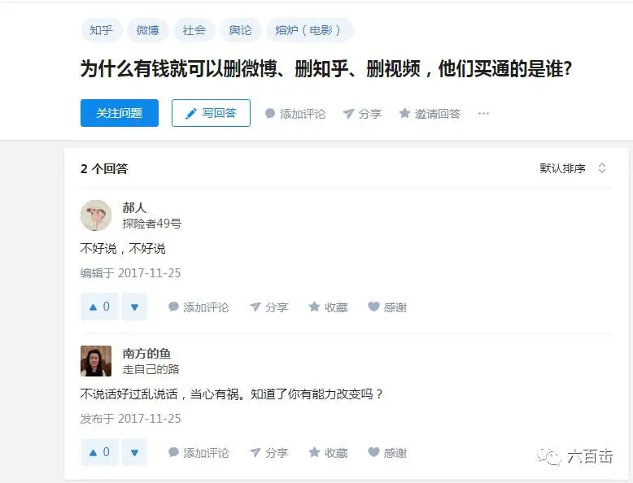
之后，袁立更多有力的证据和黑幕爆出来之后，浙江卫视和节目组不得以开除了一个临时工小导演。
这种“认错”套路也太低劣了，你当是城管打人了，真是病的不轻！！！
随着舆论讨伐的高涨，浙江卫视和节目组又出来认错了，这次的方式是这样的：
你问他：到底真相是什么样的，为什么不把当时的录像拿出来
他雇佣水军告诉你：袁立从小情商低，举止奇怪，有犯病的前科
他们很会用问题来掩盖真相，用问题来转移注意力，很多吃瓜群众自然就上套了。
把水搅浑了，岸上的其他人也就不想下水了，用沉默和冷漠去孤立正义。
认个错到底有多难！！！！！！
昨天我们还在很鄙视地唾骂小日本为什么到现在还不愿意承认南京大屠杀的暴行，转眼我们也像他们一样“坚强”：永不认错，永不低头，铁证如山，仍然厚颜无耻，一有机会就反咬你一口。
回看历史，你真的会很绝望的看到我们的无耻。
三色之后，你看到严肃的认错了么！！
xiecheng幼儿园之后，你看到认错了么！！
“美丽”的北京天际线，你看到认错了么！！
北京“大火”，你看到认错了么！！
毒奶粉，你看到严肃的认错了么！！
坐20年冤狱的杨明，你收到道歉了么！！
文革十年浩劫，我们真的认认真真认错了么！！
死了几千万所谓的“三年大饥荒”，那些亡灵收到认真的道歉了么！！
没有！！我们只有道貌岸然的虚伪和掩藏。
有的只是无数个404。
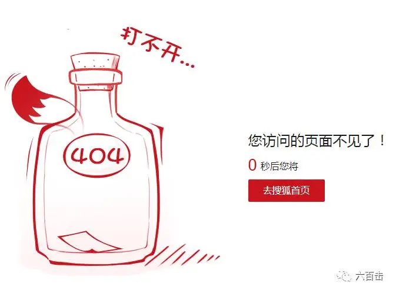
知道你热血要往上喷了，我们歇一歇，把注意力从组织和公权转回到个体，我们会认错么？
这两天，江歌案在日本开始了庭审，此前刘鑫含着眼泪充满“真诚”地告诉江歌妈妈，案发当时她没有锁门。
庭审中，警察曝光了当时刘鑫求助的电话录音。
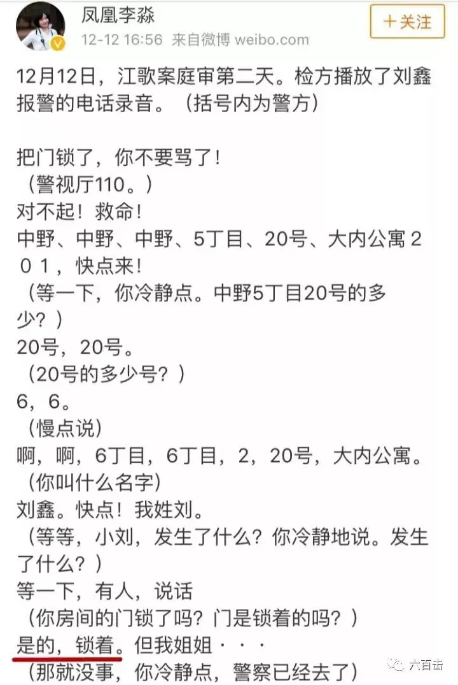
铁证如山，刘鑫当时的的确确把门锁了，她的眼泪和央求都是虚假的。
即使这样，刘鑫还是不肯认错，她的辩论让我佩服。
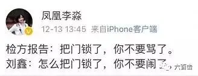
刘鑫说，电话录音没有录到前面的“怎么”，她当时说的是“闹”不是“骂”，这两个字的口音有点像。
我自己在心中默默的念了几遍，还真有点像，都是四声。
厉害厉害，到底是在天朝训练过的，太会玩文字游戏去搬弄是非了，而坐在庭审现场的杀人犯陈世峰更是面容冷静，心理素质好到令人后背发凉。
也许你觉得刘鑫怎么能够代表个体呢，她比较特别、比较“优秀”。
是的，我们在无关痛痒的小事上，是有可能会认错，但是真的有一件关系你利益的事摆在你的面前，我们真的会认错么？
刘鑫妈妈是这么做的。
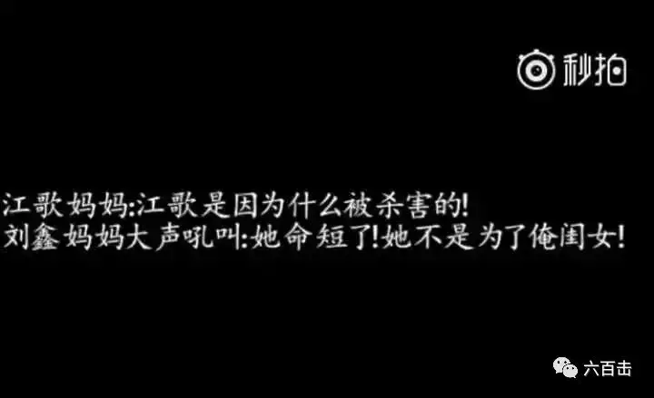
假如你的孩子或者爱人是杀人凶手，你会怎么做？
这个问题我无法臆断，大家可以诚实的问一下自己，我相信这不容易
我们太爱自己了。
我们的文化、我们的教育、我们的人际关系、我们的追求只有实用和油腻，没有真理。
只有表面的大道理、私底下的利己，没有公共意识和对真理的追求。
八面玲珑、里一套外一套是迈向成熟的标志。
最可怕的是，我们的文化没有真正的饶恕，只有道德说教。
抛开法律上的制裁，在中国的处境下，认错意味着失去所有，我们“是非分明”、脸谱化、妖魔化的教育已经浸入我们的骨髓。
不管你过去做过什么好事，只要你认错，那你就一无所有甚至万劫不复。
你认错那你就是敌对分子，那你在道德上是完全败坏的。
你就是汉奸蒋介石，你就是倒行逆施的袁世凯。
我们对待敌人会像秋风扫落叶一样残酷。
彭德怀在大会上向毛主席认错，之后在文革当做把柄，堂堂十大元帅照样被迫害致死。
中国人揪人小辫子的功夫很厉害，恰当时间，你的小辫子就会成为你的棺材。所以大家都会努力掩藏做个谦谦君子，绝不会留下污点和把柄给别人。
无法认错并难有饶恕就是我们世界真真实实的荒凉，浙江卫视和节目组只不过是其中的一只小丑队，如果我们身居其位，恐怕我们也会变成他们那样的人，到时候还会这样安慰自己：在这个位置上，我也没有办法。
你只是很精致地选着了利益，舍掉了真相！
那么认错和饶恕在哪里？
前不久，两名中国人在德国行纳粹礼拍照被抓！！！这才是认错和痛悔的正确打开方式。
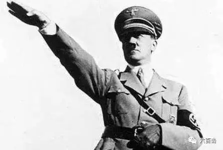
1970年12月，时任德国总理勃兰特访问波兰时，在华沙犹太人殉难者纪念碑前双膝下跪表示谢罪，曾轰动一时。
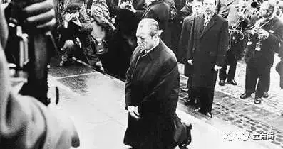
德国牧师马丁·尼穆勒痛悔的说：
“在德国，当他们(纳粹)把魔掌伸向共产党人时，我没有说话，因为我不是共产党人；当他们把魔掌伸向犹太人时，我没有说话，因为我不是犹太人；当他们把魔掌伸向天主教徒的时候，我没有说话，因为我不是天主教徒；最后，他们把魔掌伸向了我，这时，已经没有任何人站出来为我说话了。”
那么，为什么德国能够认错悔改，而日本无法悔改呢？
答案只有一个，那就是他们的基督教信仰。
基督教认为，人的心中根本就没有良善、没有悔改。
所以根本不存在认错和饶恕。
是不是很直接，一下子就把我们标榜的道德否定了，圣经中直接告诉你，每个人都是自私自利的罪人，每个人的行为和道德都经不起细细的考察和推敲。
圣经中，有这样一个有趣的故事，一个女人偷情被抓，大伙义愤填膺的把她抓起来，要用石头将她打死，这个时候耶稣对他们说：
你们中间谁是没有罪的,谁就可以先拿石头打她。
他们听到后，从老到少一个一个的都出去了。
如果这个处境放在中国，我们分分钟把那个妇人打死。
没有信仰，我们连发现问题的能力也没有，我们根本觉察不出我们自己的罪恶，我们会把自己放在道德的至高点去审批别人。
那么当众人离开后，那个妇女恐惧战兢地跪在地上，耶稣是怎么做的呢？
耶稣就直起腰来，对她说：“妇人，那些人在哪里呢？没有人定你的罪吗？”
她说：“主啊，没有。”耶稣说：“我也不定你的罪，去吧！从此不要再犯罪了。”
耶稣又对众人说：“我是世界的光。跟从我的，就不在黑暗里走，必要得着生命的光。”
我想那一刻妇女终身难忘，她经历了真正的饶恕。
后来耶稣为了我们的罪被钉死在十字架上，完成了最伟大的救赎和饶恕。
因为公义要伸张，人类的罪必须要付出代价，所以耶稣必须要被钉死。
但是耶稣承受了最大的不公平，耶稣是完全圣洁的，为了我们却被人流血。
因此，对于有信仰的人，我们认错、我们饶恕，是因为耶稣先饶恕了我们。
这就是信仰和道德说教的区别，信仰是生命与生命之间的陪伴和成就，道德却是一整套善变的说教，毫无能力。
信仰下的饶恕并非是没有底线的老好人，在真正的饶恕来到之前，正义必须要伸张，所以袁立的坚持，我们必须要为她加油、助阵。
在这个弯曲悖谬的世界，袁立，你要挺住，因为耶稣爱你，我们也爱你。
最后，回到老本行，向大家推荐一部电影，李沧东的《生命之诗》
这部电影表现了我提出的问题：假如你的孩子时杀人犯，你该怎么做？
李沧东是独树一帜并颇具世界影响力的大师，擅长描绘人性中的残酷。
他另一部表现饶恕的《密阳》大家肯定非常熟悉。
斩获威尼斯电影节金狮奖的韩国导演金基德这么评价他：“在韩国我是第三号人物，姜帝圭排第二，李沧东排第一”
希望通过这部电影，能够让我们更加清醒的认识到我们的虚伪。
《生命之诗》豆瓣评分8.3，获得第63届戛纳电影节最佳剧本奖。
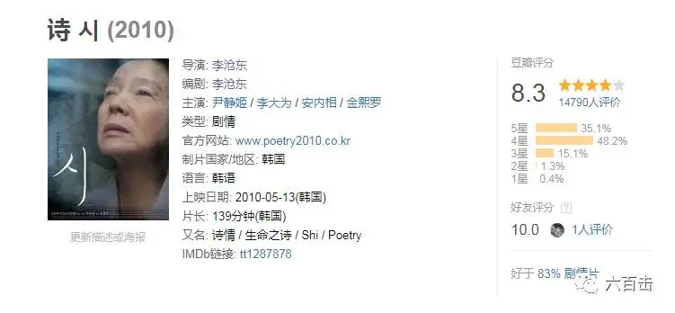
电影的名字是美丽的，主人公杨美子也是美丽的，但是刻画的故事却是残酷的。
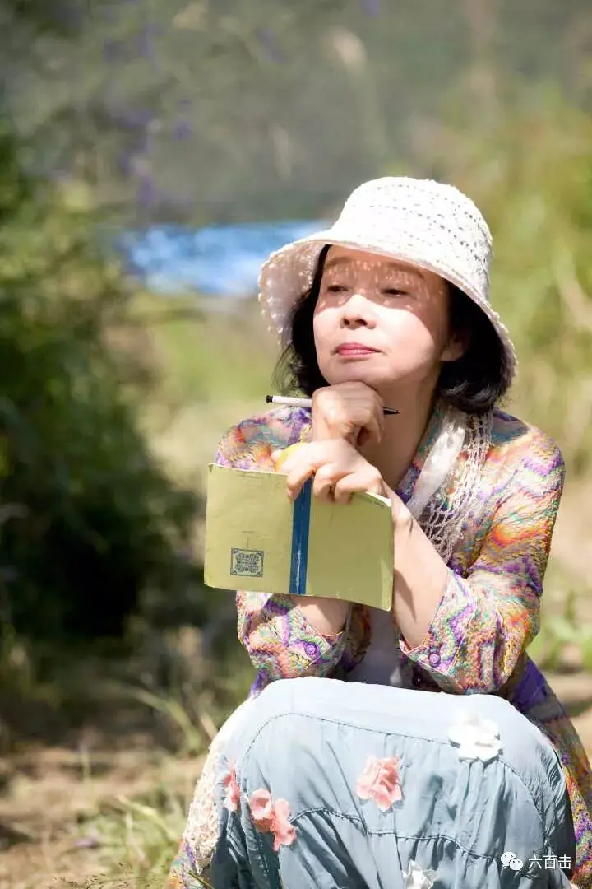
66岁的美子（尹静姬 饰）像一朵摇曳在街边的小花一样绽放着自己暮年的美丽。
美子靠做钟点工赚些小钱，与读初中的外孙独自生活的日子虽然清贫，但却丝毫没有影响她对于生活的热情。
虽然已经确诊患上了老年痴呆症，但她却依然酷爱诗歌，不仅时常参加诗歌朗诵会，而且开始学习写诗。
她总是留意观察生活中的点滴，以便捕捉随时可能出现的灵感，然后把它们记录在随身携带的小本上。
然而，如同写诗的灵感并不会轻易出现一样，生活也并非表面的那样轻松和容易……甚至说无法忍受。
美子的外孙钟旭和其他几个同学强奸了一名女同学，并且持续了六个多月，女孩无法忍受，投河自杀。
女孩的妈妈悲痛到奔溃
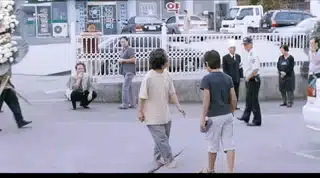
女孩将受害的事情写在日记本上，女孩妈妈、学校班主任以及几个警察知道了这件事。
但是大家都想要“低调”处理，学校不想因为这件事情摊上事，警察也不想多管闲事，施暴男孩们的家人更是担心自己的宝贝孩子为此而断送未来。
所以，家长们成立了联营，一起商讨对策，想要把这件事情压下去。
美子参加了第一次的家长联盟，一位家长负责牵头主持，他比较直接，说出了每个家长想说但又不好意思开口的话：虽然我觉得我们对不起死去的女孩，但是我们孩子的未来更重要。
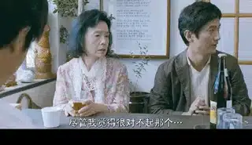
“心照不宣”后，大家脱下了故作沉重的表情，几杯小酒下肚，家长们毫无羞耻的嘴脸就出现了，有些家长开玩笑 “那个女孩不高、不漂亮，还真想不明白我们的孩子为什么还侵犯别人六个多月！！！！”
有人甚至说，那个女孩是自愿的。
美子再也无法坐下去，她走到门外，看到盛开的鸡冠花，写下了第一句诗句 “血一样红的花”。
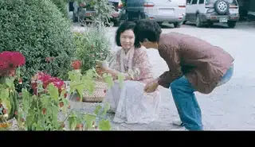
阿多诺说过，奥斯维辛之后写诗是野蛮的。
李沧东偏偏用写诗来刻画这种野蛮，这部电影处处都是平常的生活，不寻常的是，美子是以一种诗人般的视角去观察生活。
可惜她观察到的生活是残酷的，外孙钟旭对女孩的去世毫无痛悔，甚至说若无其事。
回到家中，一副颓相，仿佛他从来都没有见过那个女孩。
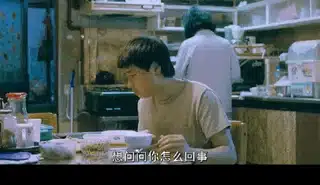
美子看着钟旭吃饭，不断暗示他自杀女孩的事情，她真的希望能在外孙的身上还能看到一丝不安。
但是这些男孩像往常一样，有说有笑，一起开心的打球，充满了年轻人的朝气
她实在无法理解这些年轻人的世界，美子写下诗句。
“鸟儿的歌声，他们为什么歌唱呢”
美子备受良心的煎熬，她无法想象被害女孩所遭受的痛苦，美子来到女孩跳河自尽的河边，打开自己的笔记本，拿起笔却写不出任何东西，这个时候天下起了雨，仿佛女孩的眼泪一样滴在自己的笔记本上。
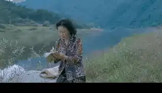
美子参加了女孩的安魂弥撒，临走时带走了女孩的照片，她把照片摆在饭桌前。
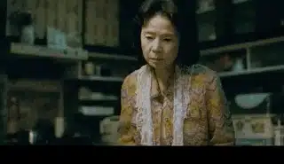
钟旭放学回来，坐在被自己害死的女孩面前吃饭。
竟然若无其事，非常镇静的吃完了饭。
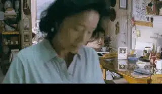
第二天，美子参加了最后一次家长聚会，事情已经用钱搞定。
大家还要为这次成功搞个庆祝会，一位家长还非常庆幸的说“幸好是个学生，要是成年人就不容易这样摆平了”
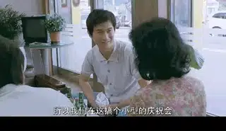
美子默默走开，将正在打电玩的钟旭带回家，给他做了可口的饭菜。
让钟旭洗了澡，剪了头发。
之后，像往常一样，美子和钟旭在街道上打羽毛球。
一切都是那么的平常。
这个夜晚钟旭也被警察悄无声息的带走了。
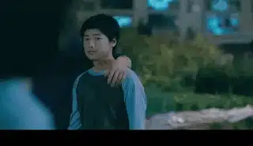
美子举报了自己的孙子。
最后用美子写给女孩的忏悔诗作为结束
“
你在那边还好吗？
感到孤独吗？
日落时天空还会变红吗？
鸟儿还在通往树林的路上唱歌吗？
你能收到我不敢寄出的信吗？
我能表达我不敢承认的忏悔吗？
时间会流逝，玫瑰会枯萎吗？
”
关注并回复生命之诗获取资源
相关推荐：
南京大屠杀80周年：我们当记住这位拯救25万中国难民的“东方辛德勒”
《至暗时刻》| 永不！永不！永远都不要放弃！
《潜行者》 | 这是全人类绝无仅有的电影了
《乡愁》 | 没有一个人能够将信仰拍的如此诗意和凝重
这里没有挑逗你眼目情欲的小鲜肉
也没有挑动你肉体情欲的段子
更没有膨胀你今生骄傲的鸡血
我们只在乎那些最质朴真诚的作品
在那里我们才能恢复真正的想象力
我们也坚信这才是我们真正需要的

ID:Six_hundred_hits
长按二维码，一键关注
【六百击】
-END-
电影评论
尽情分享朋友圈

苹果打赏通道